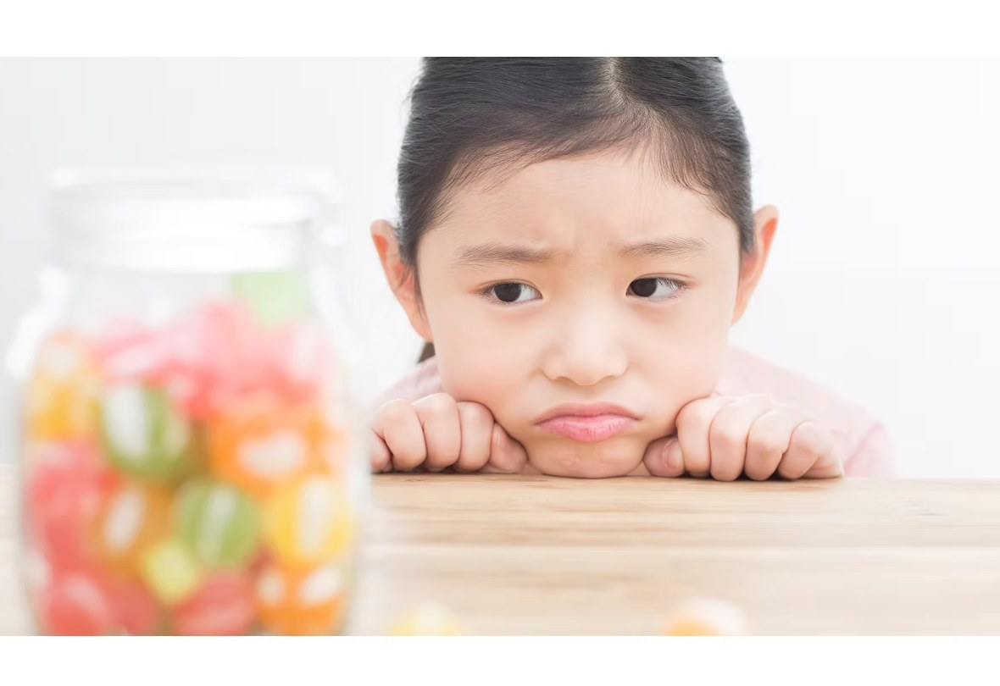
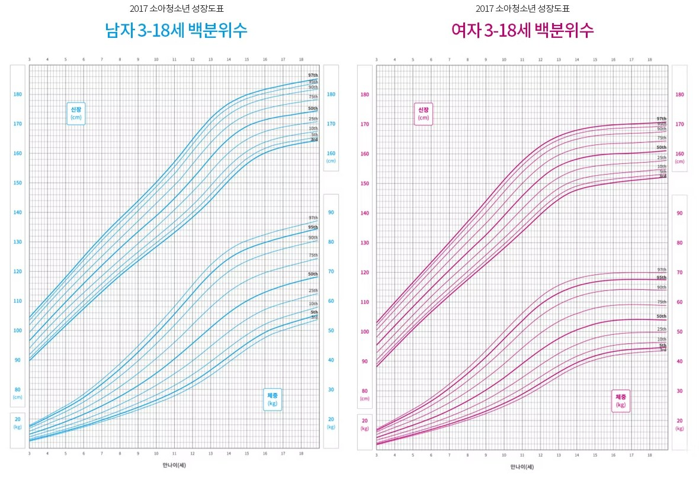
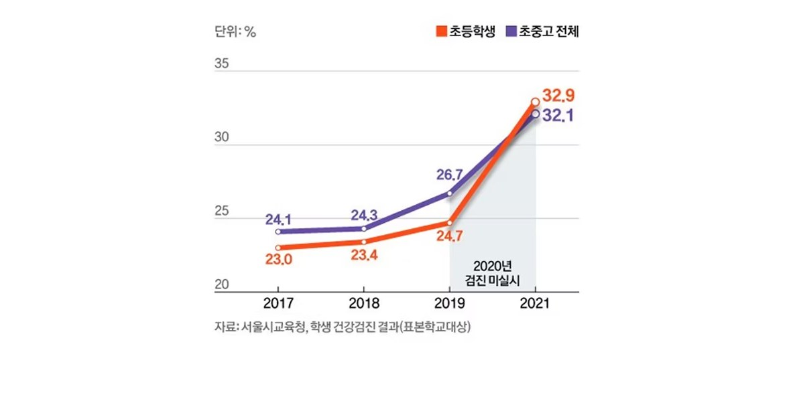
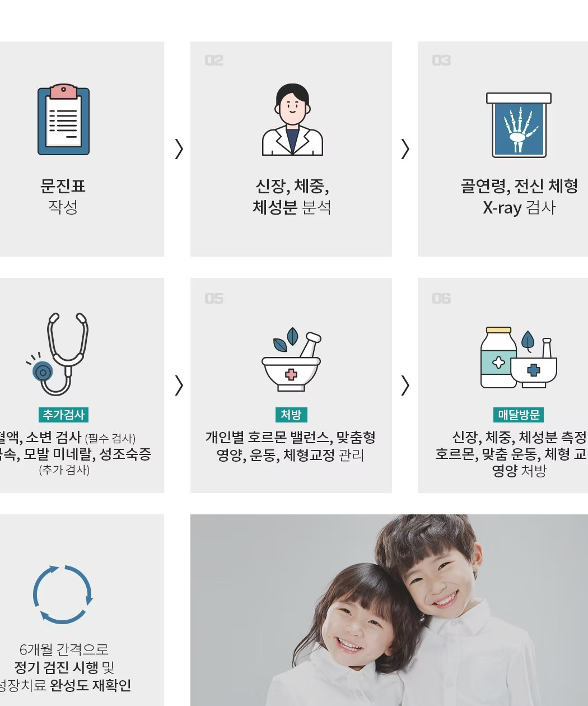

비만아이 특화 성장

성장을 방해하는 소아비만!
우리아이는 괜찮을까?
소아비만은 제대로 치료하지 않으면 성인비만으로 이어질 확률이 80% 이상입니다
그뿐만 아니라 고혈압, 고지혈증, 당뇨병 등 성인병으로 발병할 확률도 높아집니다
특히 성장기 아이의 비만은 성호르몬 분비에 영향을 주어
성조숙증을 초래할 수 있습니다

꾸준히 증가하는 소아비만
과체중은 85~95백분위수 미만, 비만은 95백분위수 이상

코로나 이후에 급증한 비만
코로나19 영향으로 체육 활동, 외부 활동량 등이 줄어들면서 급증한 초·중·고 비만율
서울 초·중·고 학생 과체중·비만 증가

성장기 아이들의 살은 다 키로 간다?
과도하게 쪄버린 살은 오히려 키 성장을 방해합니다
체내에 지방이 과도하게 쌓이면 성장호르몬의 분비를 저해하고 성조숙증의 원인이 되기도 합니다
최근 연구 결과에 의하면 비만인 아이는 사춘기의 최고 성장 속도가 떨어진다는 보고도 있습니다

소아비만은
성인비만과 다릅니다
소아비만은 지방세포의 크기뿐 아니라 개수가 함께 증가합니다
성인들은 이미 형성된 체지방세포의 부피를 늘리는 방식으로 살이 찌지만,
아이들은 지방세포의 숫자를 늘리며 체지방을 저장하는 방식이기 때문에,
소아비만은 아이들을 영구적으로 살찌는 체질로 만들기도 합니다
이것을 막으려면 소아비만을 조기에 치료함으로써 체지방세포의 수를 관리해야 합니다

소아비만, 왜 위험할까요?

성인비만

여러 질병의 원인

키 성장 방해

불안정한 심리
소아비만의 원인은 무엇일까요?

에너지 불균형
비만의 주범!

유전적 요인
자녀도 비만일 확률이 높습니다

신경내분비 요인
전달체계의 문제

사회적 요인
신체 활동 감소
소아비만 예방하는 생활습관
연세새봄의원은 2010년 개원 당시부터 바른 식습관과 호르몬 밸런스를 이용한
건강한 다이어트 프로그램을 시행하고 있습니다
또한 호르몬 밸런스 다이어트 분야 국내 최대의 임상 경험을 보유하고 있습니다
이를 바탕으로 187 성장클리닉 아이의 건강한 다이어트를 진행하고 있습니다

식이 관리

생활 관리

규칙적인 신체활동

수면 관리수면제 없는 수면클리닉
진료 과정
아이의 성장 관리는 아이, 부모님, 의사가 함께 하는 과정입니다
따라서 187 성장 클리닉의 모든 진료 과정을 부모님과 함께 진행하고 있습니다
초진 순간부터 성장 치료가 종료된 후 6개월~1년까지 지속적인
케어를 통해 아이의 건강한 성장을 관리합니다

연세새봄에서는
‘건강하고 균형있는 성장’을
약속 드립니다
연세새봄은 오랜 시간 성장치료를 해온 경험을
바탕으로 미래의 운동선수를 준비하고 있거나 방송,
연기, 모델을 준비하는 우리 아이를 위한 특별한
성장 클리닉 입니다. 바른 영양과 수면, 그리고
균형 잡힌 호르몬 치료를 통해 건강하고 밝은 아이의
미래를 함께 준비합니다.